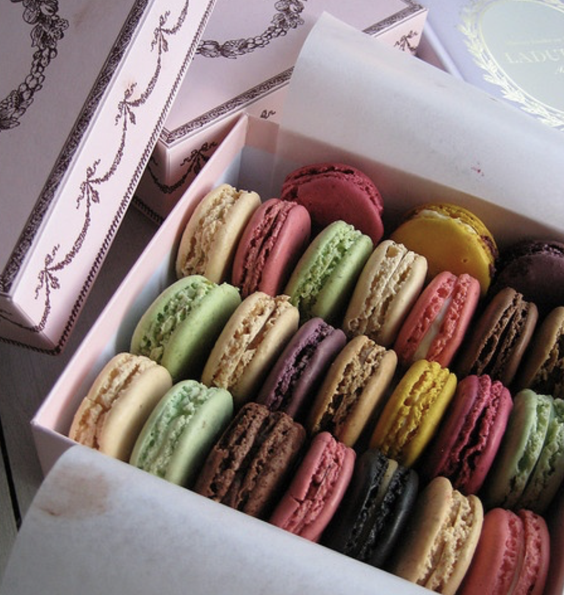

French Macarons

Ingredients:
- 1 cup almond flour
- 1 3/4 cups powdered sugar
- 3 large egg whites (at room temperature)
- 1/4 cup granulated sugar
- 1/2 teaspoon cream of tartar
- Food coloring (optional, for colorful shells)
- Buttercream or ganache (for filling)
Instructions:
- Sift the almond flour and powdered sugar together into a bowl to remove lumps.
- In a separate bowl, beat the egg whites with an electric mixer until foamy. Add the cream of tartar and beat until soft peaks form.
- Gradually add the granulated sugar while beating, until stiff peaks form.
- Gently fold the dry mixture into the egg whites in three batches using a spatula. Be careful not to overmix.
- If using, add food coloring and gently mix until evenly distributed.
- Transfer the batter to a piping bag fitted with a round tip. Pipe small circles onto a baking sheet lined with parchment paper.
- Tap the baking sheet on a flat surface to release air bubbles. Let the macarons sit at room temperature for 30-60 minutes, until a skin forms on top.
- Preheat your oven to 300°F (150°C). Bake the macarons for 15-18 minutes, rotating the tray halfway through.
- Allow the shells to cool completely before removing them from the parchment paper.
- Pipe buttercream or ganache onto one shell and sandwich it with another. Refrigerate for 24 hours for the best texture and flavor.